アプリを起動すると、レースダッシュボードが表示されます。画面上部の5つのタブで画面を切り替えます。
| タブ | 機能 |
|---|---|
| レース | 今週のレース一覧。レースカードをクリックで詳細表示 |
| AI予想 | AIによる期待値ランキング。全レース横断で有望馬を表示 |
| 統計DB | 種牡馬別・母父別・枠番別・人気別の統計データ |
| お気に入り | 注目馬の登録・出走予定チェック |
| 検索 | 馬名・騎手名・調教師名・レース名で検索 |
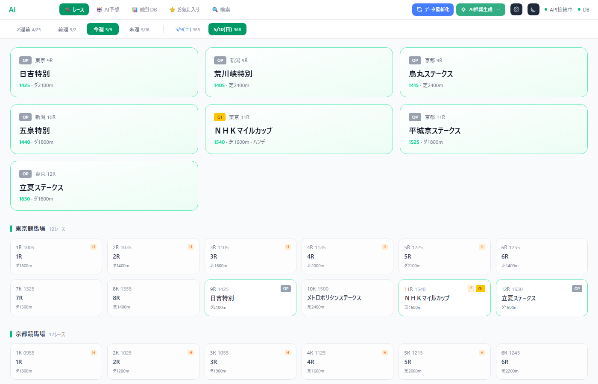
「2週前」「前週」「今週」「来週」から選択。競馬は土日に開催されるため、各週の土日レースが表示されます。
画面上部に重賞レースが大きなカードで表示されます。色分けの意味：
| 色 | グレード |
|---|---|
| G1 | G1レース（天皇賞、日本ダービー等） |
| G2 | G2レース |
| G3 | G3レース |
| OP | オープン・リステッド |
各競馬場（東京・京都・新潟等）ごとに12レースが並びます。レースカードには以下が表示されます：
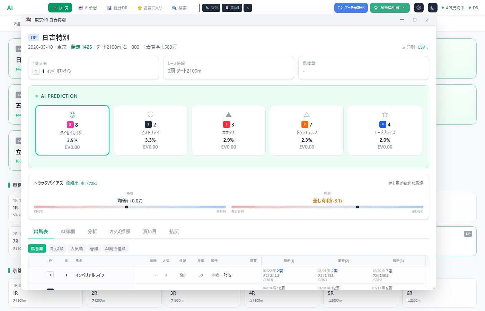
レース名、開催日、発走時刻、コース情報が表示されます。「1番人気」には現在の1番人気馬とオッズが表示されます。
AIが予測した上位5頭が印付きで表示されます。各カードには：
| 印 | 意味 | 説明 |
|---|---|---|
| ◎ | 本命 | AIが最も勝率が高いと予測した馬 |
| ○ | 対抗 | 2番目に高い勝率の馬 |
| ▲ | 単穴 | 3番目。穴として注目 |
| △ | 連下 | 4番目。2着・3着候補 |
| ☆ | 注意 | 5番目。展開次第で上位に来る可能性 |
勝率はAIが予測した「その馬が1着になる確率」。EV（期待値）は「勝率 × オッズ - 1」で計算され、馬券としての価値を表します。
出馬表は「馬番順」「オッズ順」「人気順」「着順」「AI期待値順」でソートできます。各行をクリックすると展開して詳細情報（血統、過去走、調教評価）が表示されます。
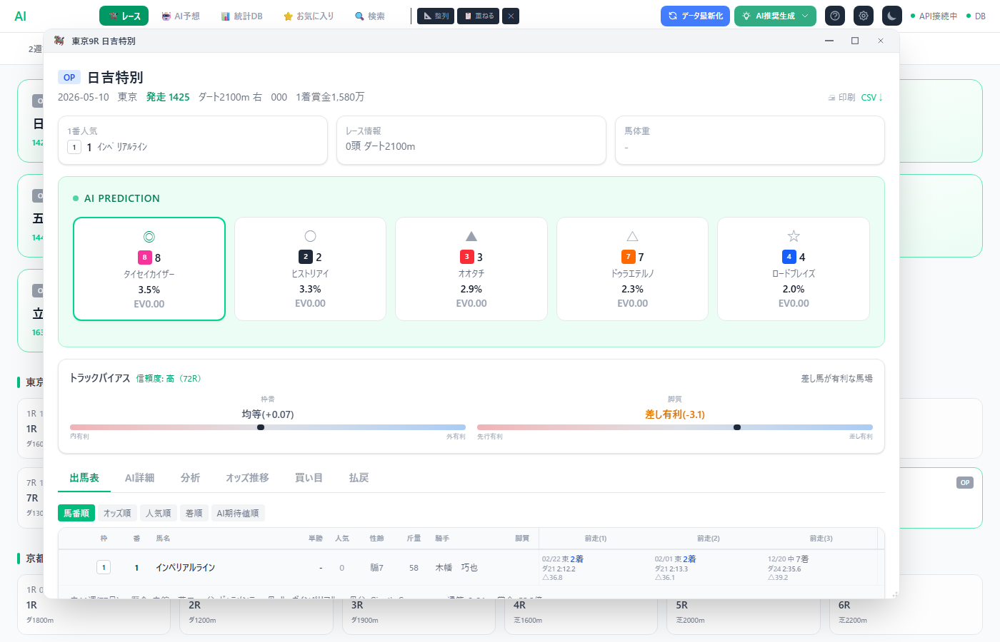
行をクリックすると、その馬の詳細情報が展開されます。血統（父・母・母父）、通算成績、調教AI評価（S〜Dランク）、過去走テーブルが表示されます。
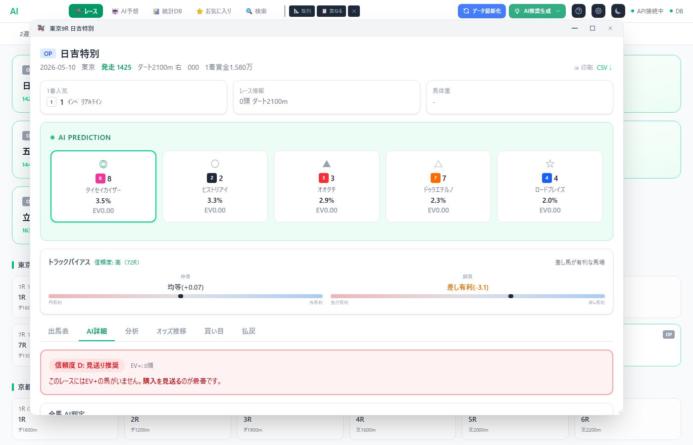
AIの予測をファクター別に分析。5つのファクター（血統、調教、直近成績、コース適性、展開適性）をS〜Dの5段階で評価します。「信頼度」と「EV+の馬がいるか」も表示されます。
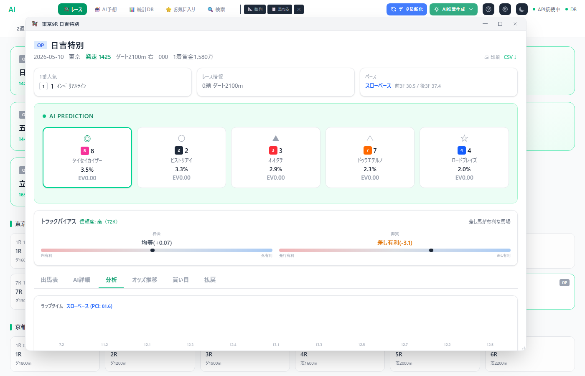
ラップタイム、脚質分布、枠番別成績、上がり3Fの分析を表示します。
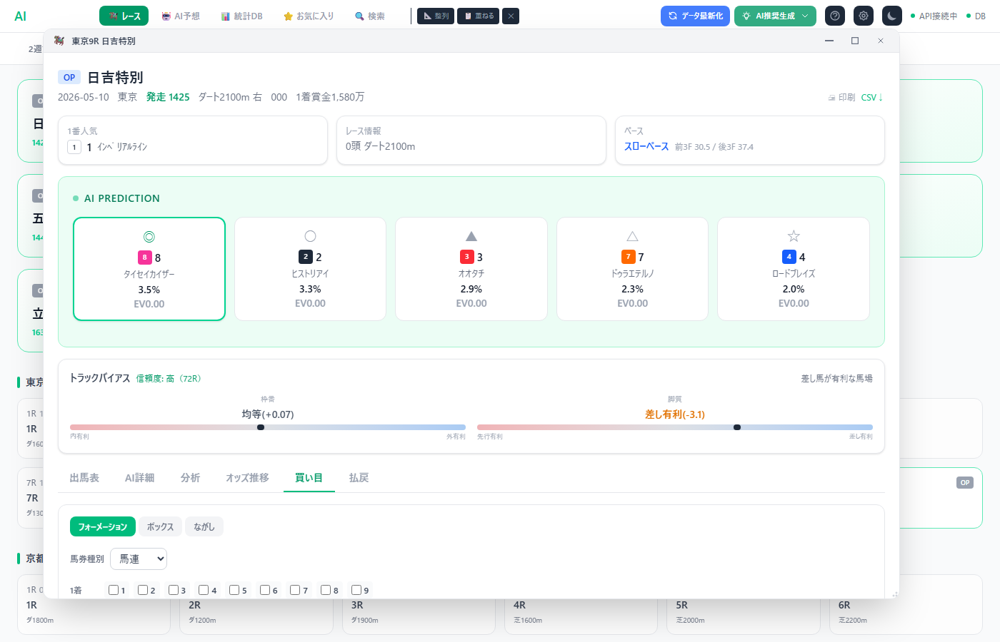
フォーメーション・ボックス・ながしの3方式で馬券の買い目を計算。馬券種別（馬連・ワイド・三連複等）を選んで、馬番を選択すると組み合わせ数と購入金額が自動計算されます。
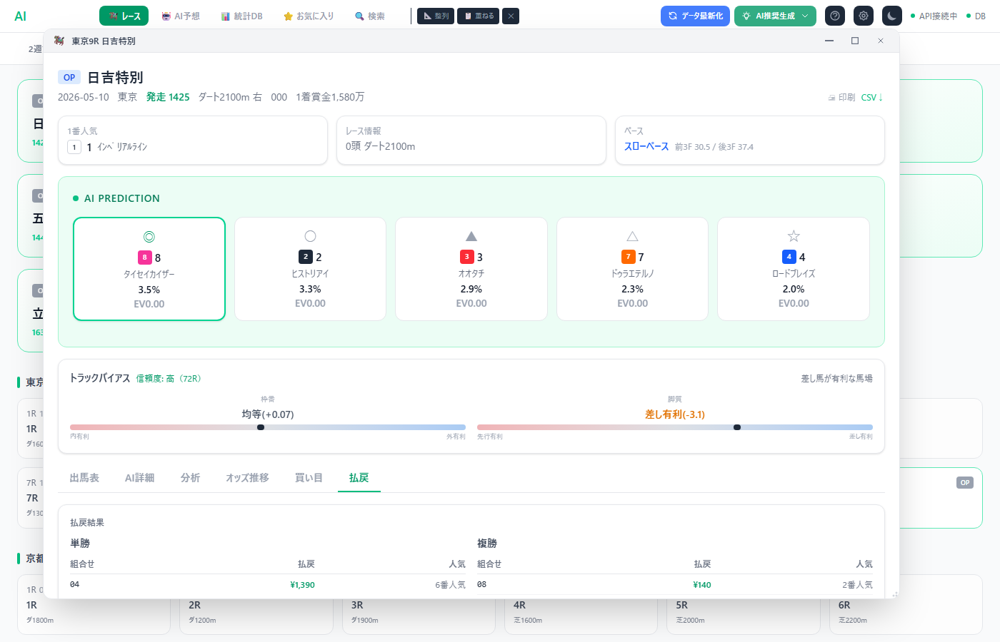
レース確定後の払戻金を券種別に表示します。
各馬の直近3走が横に並びます。表示内容：
トラックバイアスは「その日のコースの偏り」を表します。2つの軸で分析：
| 表示 | 意味 |
|---|---|
| 内枠有利（+） | 1〜4枠の馬が人気以上に好走。内枠を重視 |
| 均等（±0） | 枠番による有利不利なし |
| 外枠有利（-） | 5〜8枠の馬が人気以上に好走。外枠を重視 |
| 表示 | 意味 |
|---|---|
| 先行有利（+） | 逃げ・先行馬が残りやすい馬場。前に行ける馬を重視 |
| 均等（±0） | 展開次第でどの脚質も可能性あり |
| 差し有利（-） | 後方から差す馬が届きやすい馬場。上がりの速い馬を重視 |
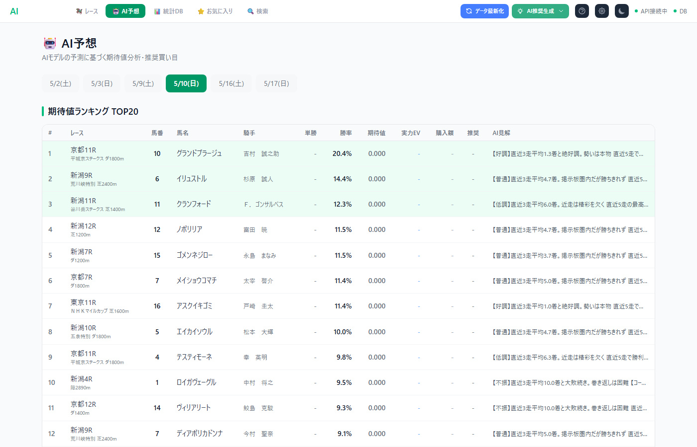
全レースを横断して、AIが最も有望と判断した馬のランキングです。ソート基準は「√勝率 × (1 + EV)」の複合スコア。勝率だけでなく、穴馬の期待値も考慮したバランスの取れたランキングです。
各レースについて、AIが推奨する買い目が表示されます。EV+（期待値プラス）の馬を軸にした単勝・馬連・三連複の組み合わせです。
全レースの推奨買い目をまとめた一覧表。券種、組み合わせ、推奨金額、期待値が一目でわかります。
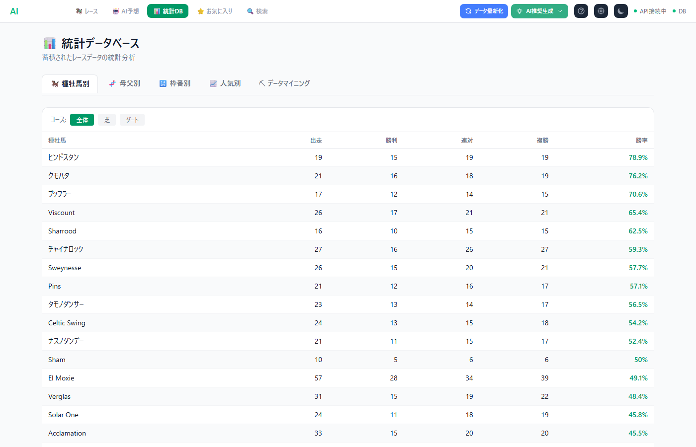
父馬の系統ごとの勝率・連対率・複勝率を確認。芝/ダートの切替も可能です。
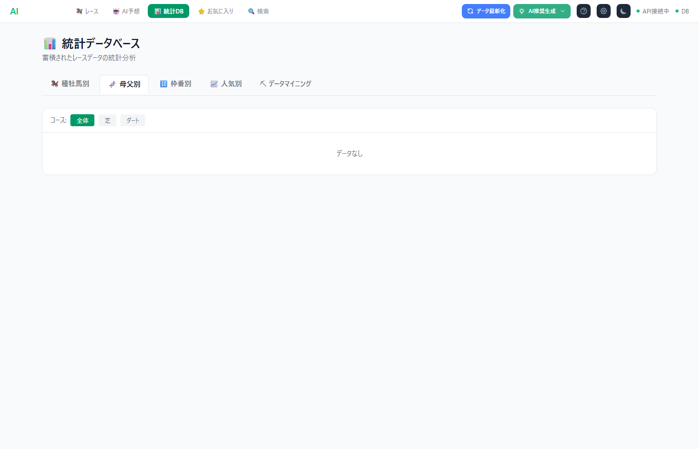
母の父の系統ごとの成績。配合相性の確認に使います。
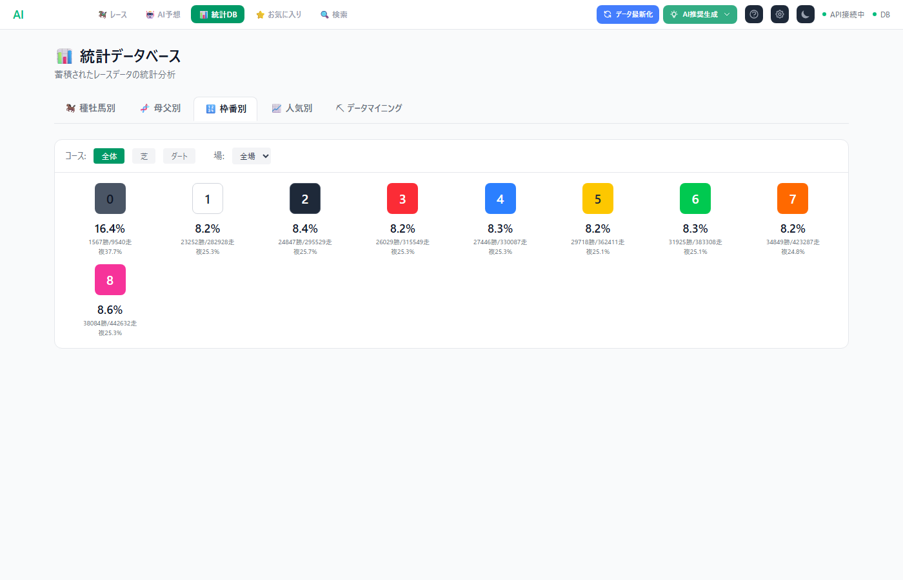
会場ごとの枠番有利不利を数値で確認。内枠有利/外枠有利の傾向がわかります。
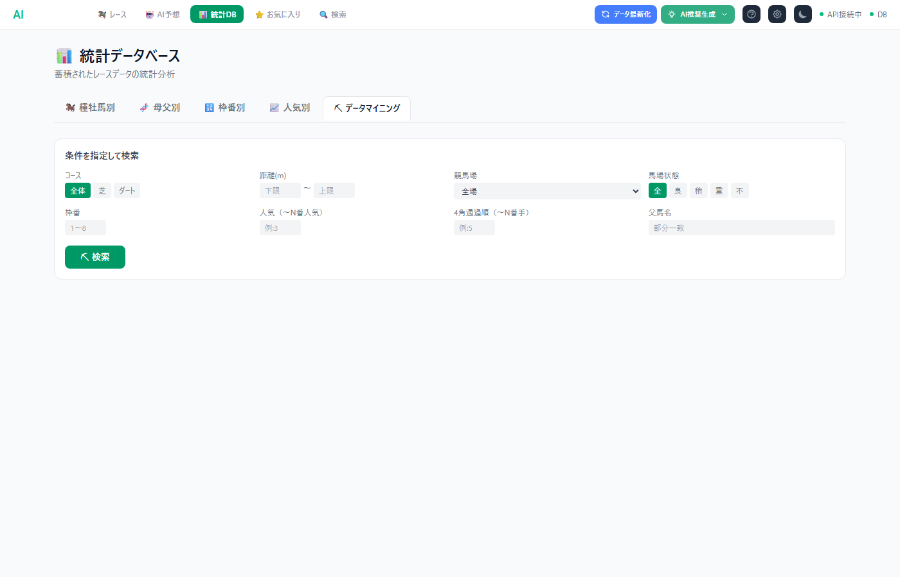
複合条件（コース×距離×馬場×枠番×種牡馬等）で過去の成績を検索。
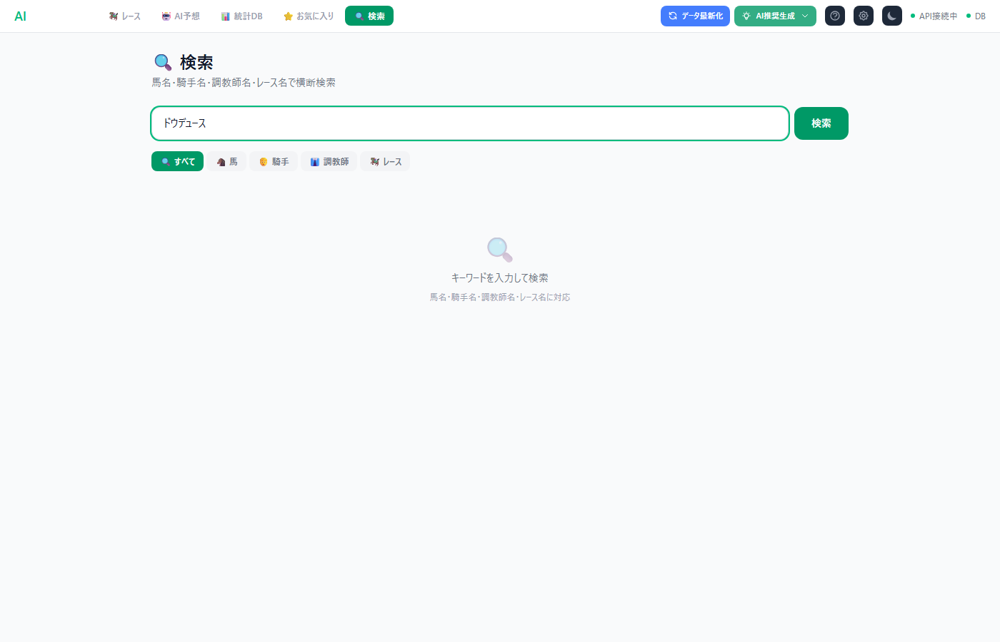
馬名・騎手名・調教師名・レース名をまとめて検索。結果をクリックすると詳細画面が開きます。カテゴリ（全て/馬/騎手/調教師/レース）で絞り込みも可能。
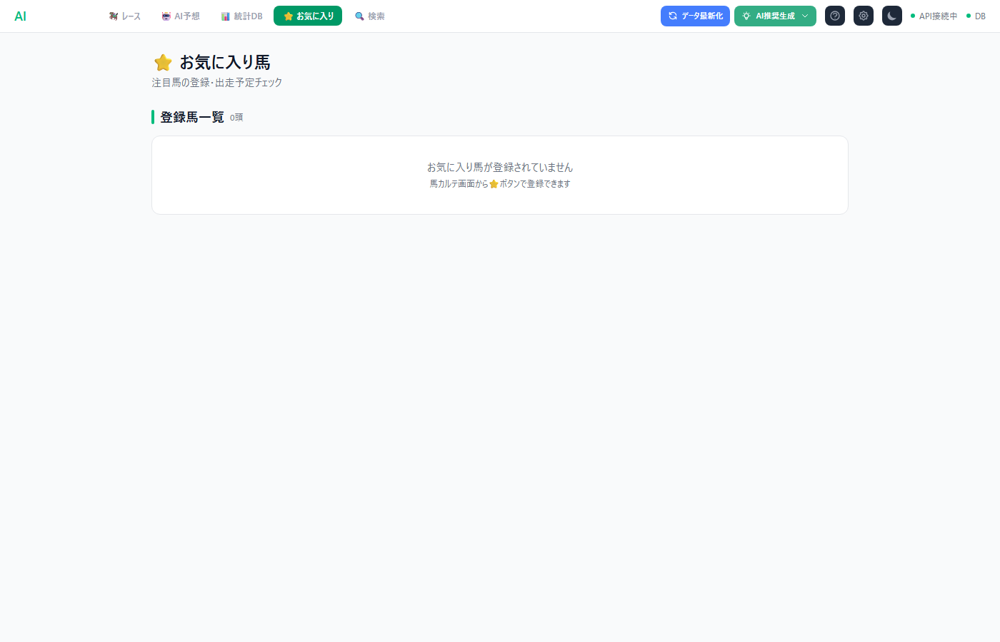
注目している馬をお気に入り登録すると、出走予定がダッシュボードのバナーに表示されます。馬の詳細画面の「お気に入りに追加」ボタンから登録できます。
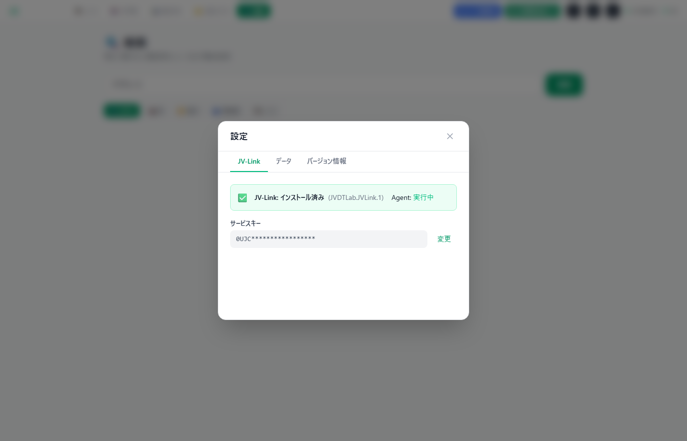
ヘッダーの歯車アイコンから設定画面を開けます。JV-Linkのインストール状態確認、サービスキーの変更、データベース設定の確認ができます。
ヘッダー右上のデータ最新化ボタンで以下を自動実行：
AI推奨生成ボタンで、今週または今月のレースに対するAI予測を一括生成します。
ヘッダーの歯車アイコンから設定画面を開けます。JV-Linkのサービスキー変更、データベース設定の確認ができます。
A: 「データ最新化」ボタンを押してください。初回はJV-Linkからのデータ取込に数分かかります。JV-Linkがインストールされていない場合は、JRA-VAN公式サイトからインストールしてください。
A: AIモデルの学習が必要です。「AI推奨生成」ボタンを押すか、管理者にモデル学習の実行を依頼してください。
A: オッズはJV-Linkのリアルタイムデータで取得されます。「データ最新化」ボタンを押してください。発売前のレースにはオッズが表示されません。
A: サンプルレース数が5未満の場合に「低」と表示されます。開催日の後半（レースが進むにつれ）信頼度が上がります。開催初日は前の開催のデータも参考にしています。
A: JV-Linkのデータ配信サーバーは深夜帯（0:00〜6:00頃）にメンテナンスを行う場合があります。朝7時以降に再試行してください。